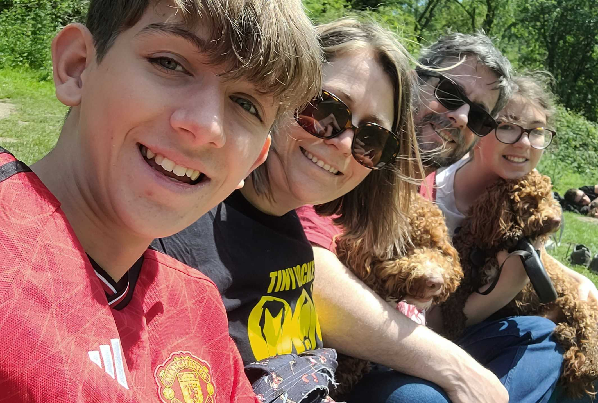
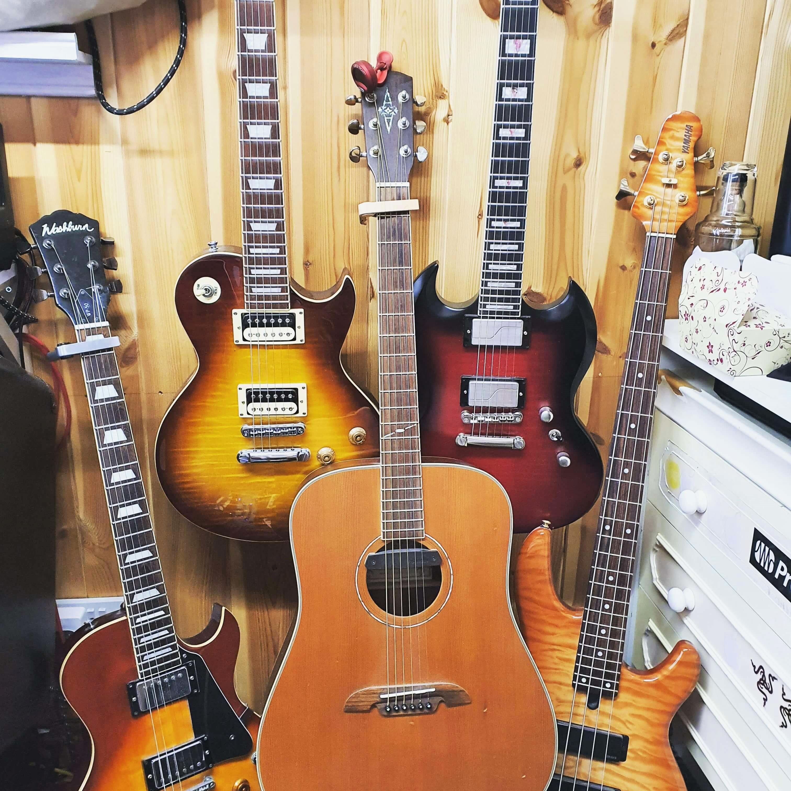

...now, what do I make it about?
Please note, this is just plain old HTML as the idea of this website is that as the page numbers increase, so does the complexity, so it develops along with my learning.
It's janky, nothing looks nice, and the Times New Roman may make you sick.
It's not all I can do though. I'm now 4 weeks and a handful of days into a bootcamp course to help me enter the world of software development. Having not done any sort of coding before, it's been a fairly steep learning curve, though I'm getting to grips with HTML, CSS, Bootstrap and a few other technologies. Next week we're starting on JavaScript.
In case you can't tell, this page is a create and forget thing. It's a moment in time and should be seen as such. I'll look back on this in a couple of weeks and cringe.
This seems like a good place to start. I started a 16-week bootcamp on October 21st, and today being a month later exactly it's a great time to review where I am at. I've been using the Code Institute LMS and working through modules to learn how to create websites. We started off with HTML like this page and have gradually increased the sophistication to the point where this soon into the course I feel pretty confident making nice looking websites.
I'd recommend the course to anyone looking to move into coding, though it's full time and you need to be very self-reliant. All of the CI staff are great though - very supportive and knowledgeable.
Links to their website and the course are below (apologies if they go out of date - I don't know how long the course's page will be active)...
Code Institute Website 16-week Bootcamp Course(Shouldn't family come before dogs?)
I need to find a nice picture of my family, though they're often pulling faces!
Ah, found one. This is from the day we took Fudge and Rufus to the Peak District.
I'm a guitarist and singer in a band and have a small studio at home.
Here are some of my guitars, and after that there's a video of me quickly recording a song section idea I had one day last year.
Each page will feature one of these sections in a little more depth and gradually get more complex as the pages progress.
Enjoy(?)